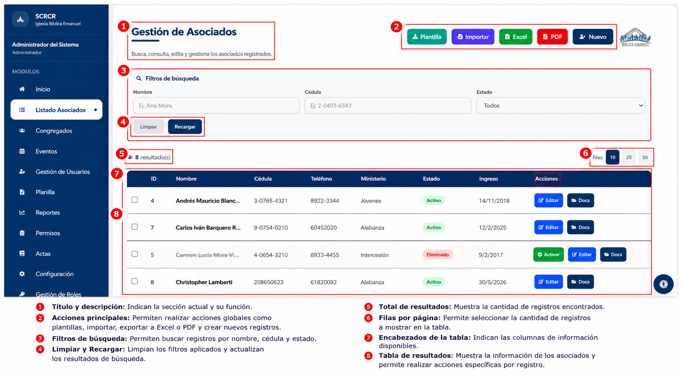
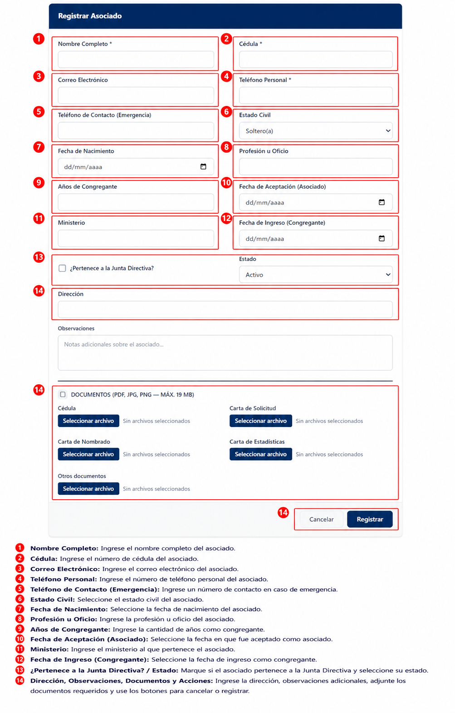
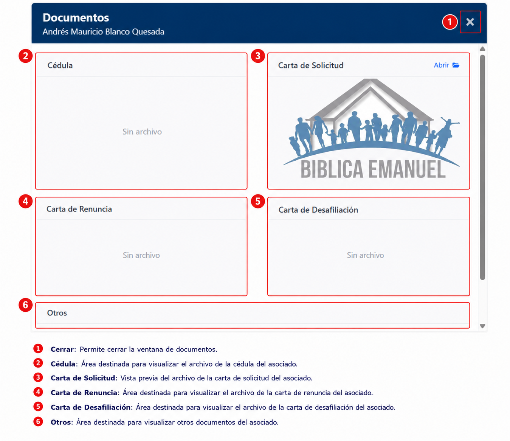
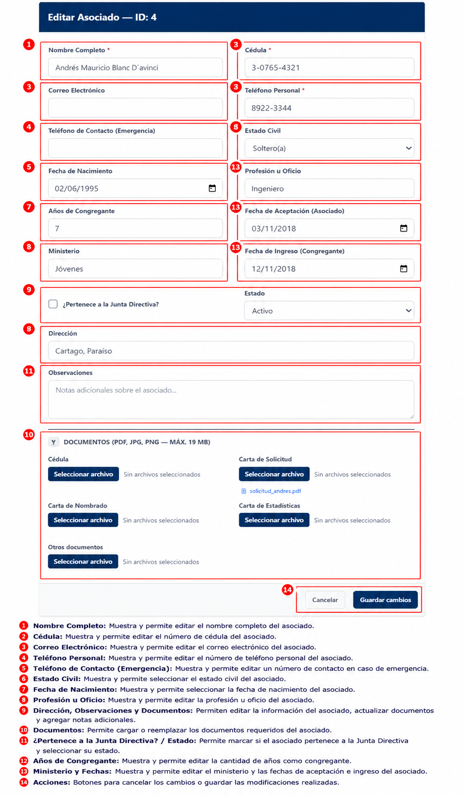

Listado de Asociados
Descripción
El módulo Listado de Asociados permite consultar, buscar y administrar la información de los asociados registrados en el sistema.

Secciones clave del módulo
- Título y descripción: indica en qué sección estás y cuál es su función.
- Acciones principales: botones para plantilla, importar, exportar a Excel/PDF y crear un nuevo asociado.
- Filtros de búsqueda: permite buscar por nombre, cédula y estado.
- Limpiar y recargar: limpia los filtros y actualiza los resultados.
- Total de resultados: muestra la cantidad de registros encontrados.
- Filas por página: permite seleccionar cuántos registros se muestran.
- Encabezados de columna: muestran la información disponible en la tabla.
- Tabla de resultados: lista los asociados con opciones de acción por registro.
Funcionalidades principales
- Consultar asociados registrados.
- Buscar asociados por nombre, cédula o estado.
- Filtrar por estado.
- Exportar información a Excel.
- Exportar información a PDF.
- Registrar nuevos asociados.
- Editar información existente.
- Activar asociados inactivos.
Uso del módulo
- Ingrese los criterios de búsqueda en los filtros disponibles.
- Presione Recargar para actualizar los resultados.
- Use Limpiar para volver a mostrar todos los registros.
- Seleccione Excel o PDF para exportar la lista.
- Presione Nuevo para abrir el formulario y registrar un asociado.
- En la tabla, use Editar o Docs para administrar cada registro.
Registrar Asociado
Para registrar un nuevo asociado, haga clic en Nuevo desde el listado de asociados.
Pasos para registrar un asociado
- Complete los datos del formulario principal.
- Adjunte los documentos requeridos.
- Presione Registrar para guardar el registro.
Campos del formulario de registro

- Nombre Completo: Ingrese el nombre completo del asociado.
- Cédula: Ingrese el número de cédula del asociado.
- Correo Electrónico: Ingrese el correo electrónico del asociado.
- Teléfono Personal: Ingrese el número de teléfono personal del asociado.
- Teléfono de Contacto (Emergencia): Ingrese un número de contacto para emergencias.
- Estado Civil: Seleccione el estado civil del asociado.
- Fecha de Nacimiento: Seleccione la fecha de nacimiento del asociado.
- Profesión u Oficio: Ingrese la profesión u oficio del asociado.
- Años de Congregante: Ingrese la cantidad de años como congregante.
- Fecha de Aceptación (Asociado): Seleccione la fecha en que fue aceptado como asociado.
- Ministerio: Ingrese el ministerio al que pertenece el asociado.
- Fecha de Ingreso (Congregante): Seleccione la fecha de ingreso como congregante.
- ¿Pertenece a la Junta Directiva? / Estado: Marque si pertenece a la Junta Directiva y seleccione su estado.
- Dirección: Ingrese la dirección del asociado.
Documentos del asociado

- Documentos admitidos: PDF, JPG o PNG, máximo 19 MB.
Adjunte los siguientes documentos según corresponda:
- Cédula
- Carta de Solicitud
- Carta de Nombrado
- Carta de Estadísticas
- Otros documentos
Use los botones Seleccionar archivo para cargar cada documento y luego presione Registrar.
Botones de acción
- Cancelar: Cierra el formulario sin guardar cambios.
- Registrar: Guarda el nuevo asociado en el sistema.
!!! note Verifique que los datos ingresados sean correctos antes de finalizar el registro.
Visualizar documentos adjuntos
Para revisar los documentos que ya fueron cargados para un asociado, abra la opción Docs desde el listado de asociados.

En esta ventana puede ver los archivos guardados para el asociado:
- Cédula
- Carta de solicitud
- Carta de renuncia
- Carta de desafiliación
- Otros documentos
Editar Asociado
Para modificar la información de un asociado, seleccione Editar desde el listado principal.

Actualice los datos necesarios y luego presione Guardar cambios.
!!! NOTA: Los campos marcados con un asterisco (*) son obligatorios y deben completarse para poder registrar o actualizar la información del asociado.